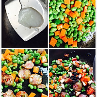

手順1
すべての材料を準備し、それらをすべて洗い、にんじん、青ピーマンと赤ピーマン、椎茸を細かく切り、ソーセージをスライスします。
手順2
ご飯をすすぎ、美的炊飯器に注ぎ、適量の水を加え、バルサミコ酢を数滴落とし、蓋を閉め、電源を差し込んで、調理ボタンを押します。
手順3

鍋を熱し、ラードを少し入れ、みじん切りにした生姜を加えて香りが出るまで炒め、枝豆とにんじんを注ぎ、1分炒め、ソーセージのスライスを加えて透明になるまで炒め、その後、椎茸、緑唐辛子、赤唐辛子の粒を加え、薄口醤油と干しテンペを加えてよく炒め、少量の水を噴霧して7つの熟したものを茹でてお召し上がりください。
手順4
このとき、ご飯も沸騰していて、ほとんど乾いており、ご飯の側面に揚げたソーセージと野菜を注ぎます。
手順5
蓋を閉め、保温ボタンに引っかかるまで調理を続けます。
手順6
つまずいて数分煮込んだ後、炊飯器のフタを開けると、ご飯やソーセージ、野菜の強い香りが鼻に出て、涎を垂らさずにはいられませんでした。
トップページに戻る